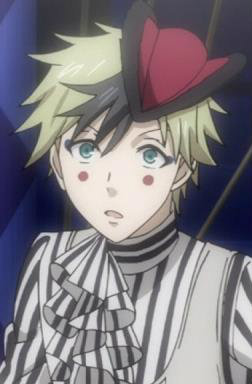

|  |
Dagger |
- Black Butler: Book of Circus
|
Dagger is one of the Carnies at Noah's Ark Circus. His circus trick is a knife thrower which never misses his target. He is a flamboyant, dramatic, energetic person who is almost constantly smiling. He has feelings for Beast. |
 |
Ikta Solork |
|
Ikta Solork is a lazy genius. He lacks physical strength and motivation but makes up with his high intelligence. He is aggressive towards handsome men. |
 |
Ryou Kurokiba |
- Food Wars!
- Food Wars! OVA
- Food Wars! The Second Plate
- Food Wars! The Second Plate OVA
- Food Wars! The Third Plate
- Food Wars! The Third Plate: Totsuki Train Arc
- Food Wars! The Third Plate OVA
- Food Wars! The Fourth Plate
|
Ryuo Kurokiba is a 92 Tootsuki Generation and Alice Nakiri's aide. He is normally very slow, lazy and gloomly. When he cooking, he is more bold, wild and untame. He has a passion for cooking. He specialized in Seafood. |